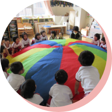
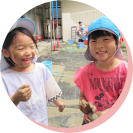

HOME
園のこと
園の取り組み
0～2歳児の一日
3～5歳児の一日
年間行事
お知らせ
園のこと
園の取り組み
0～2歳児の一日
3～5歳児の一日
年間行事
お知らせ
ホーム
>
園のこと
1歳児(ゆり組)・
2歳児(はと組)
07:15〜
保育スタート
登園時間は7時15分～9時30分になります。
順次登園・自由遊び。
3歳から5歳まで合同。園庭遊びが中心になります。
朝はエネルギッシュで集中力もあり、異なる年齢の子どもとも、いろいろな遊びが楽しめます。
★心身の発達のため、1日の始まりのためには、この時間帯の遊びは大切です。
10:00
各保育室に入り、
手洗い、うがいの後、礼拝
礼拝では、お友達や保育者と一緒に朝の祈りを行い賛美歌を歌って心を落ち着けます。
絵本を読んでもらったり、友達と一緒に歌ったり話し合ったりする時間でもあります。

10:30
設定保育
年齢に合った遊びを保育者が提供し、いろんな遊びを楽しみます。
音楽・造形・体育・ごっこ遊び・クッキング・散歩・園外保育など。
11:30
食事
和食中心の完全給食です。アレルギー対応食もあります。
13:00
午睡
自由遊び
3歳児、4歳児
5歳児
15:00
礼拝
保育者、お友達と一緒に1日の守りの感謝。
社会のため、またお友達のために祈ることもできます。
15:30
自由遊び
主に外で遊び、お迎えの時間帯が来るのを待ちます。

16:30
お迎えの時間帯
降園時間は16時30分～18時15分になります。
順次降園
18:15〜
19:00
延長保育の時間帯
0歳児から5歳児まで一緒に１階の保育室で過ごします。
お腹も減ってきますのでビスケット・おせんべいなどを少し食べたり絵本を読んでもらったりして過ごします。
延長保育
18:15～19:00
※0歳は18時15分まで（要相談）
※延長保育を受けるには、当園への別途、申請が必要です。
ご見学
お問い合わせ
ご見学やご相談、お問い合わせ、入園申込については随時、受付中です
（ご見学はお電話の上、日程をご確認ください）
075-351-3990